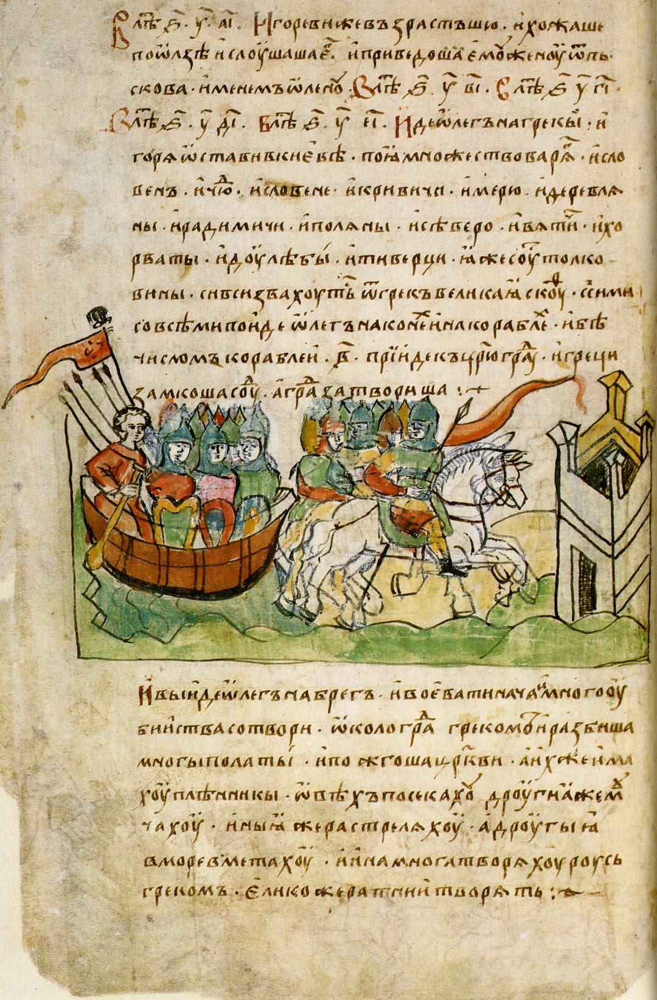
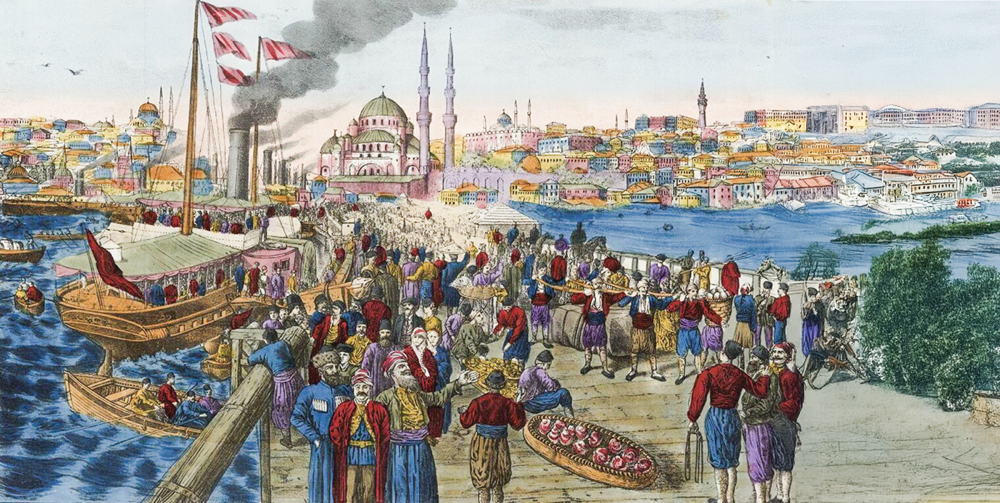

Договор 911 года
Первый письменный международный договор Руси
Договор 911 года, заключённый между князем Олегом и византийскими императорами Львом VI и Александром, является первым дошедшим до нас письменным международным договором Древней Руси. Он был включён в «Повесть временных лет» и сохранился в древнерусском переводе с греческого оригинала [[19]].
Договор состоял из 15 статей и регулировал широкий круг вопросов: от торговых отношений до уголовного права. Он свидетельствует о высоком уровне развития древнерусской государственности и дипломатии [[23]].

Основные положения договора 911 года
- Торговля: русские купцы могли свободно торговать в Константинополе, получая продовольствие и всё необходимое на 6 месяцев за счёт византийской казны
- Правовой статус: русские подданные в Византии и византийские подданные на Руси находились под защитой закона
- Уголовное право: установлены наказания за убийство, кражу, нанесение увечий — как для русских, так и для греков
- Выкуп пленных: обе стороны обязались выкупать своих пленных
- Военный союз: русские обязались не разорять византийские владения в Крыму (Херсонес)
- Взаимная помощь: русские корабли обязались помогать византийским судам в случае необходимости
- Наследство: если русский купец умирал в Византии без завещания, его имущество отправлялось на Русь родственникам
- Судопроизводство: споры между русскими и греками рассматривались с участием свидетелей с обеих сторон
Историческое значение
Договор 911 года демонстрирует, что Древнерусское государство уже в начале X века обладало развитой правовой системой и дипломатическими традициями. Русь выступала как равноправный партнёр одной из величайших империй мира [[25]].
Текст договора, включённый в летопись, является ценнейшим историческим источником, позволяющим судить о социальном строе, торговле, праве и международных связях Древней Руси.
Правовые нормы
Договор содержит детальные правовые нормы, регулирующие отношения между русскими и греками. Это свидетельствует о высоком уровне развития древнерусского права.
Нормы договора отражают обычное право восточных славян и византийское право.
Торговые привилегии
Русские купцы получили беспрецедентные привилегии в Константинополе: беспошлинную торговлю, бесплатное содержание, право брать товары в кредит.
Эти условия были выгоднее, чем для купцов из многих других стран.

Сравнение с другими договорами
Договор 911 года был более подробным и выгодным для Руси, чем последующий договор 944 года, заключённый князем Игорем. Это отражает изменение баланса сил: при Олеге Русь была сильнее, при Игоре Византия смогла добиться лучших условий для себя.
Договор 911 года оставался основой русско-византийских отношений до 944 года.